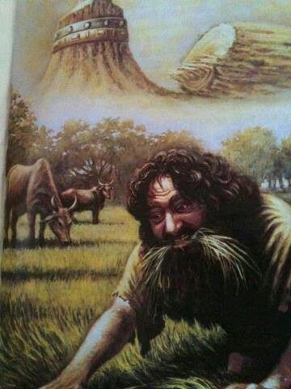

Daniel Chapter Four
Back to contents
The king who ate grass
It is written, “humble yourselves before the Lord and He will lift you up.” It is also written by king Solomon that pride is among the things that God hates the most. Just how does God hate pride? Well, we might get an idea from what we are going to learn today.
"VERSE 1. Nebuchadnezzar the king, unto all people, nations, and languages, that dwell in all the earth; Peace be multiplied unto you. 2. I thought it good to show the signs and wonders that the high God hath wrought toward me. 3. How great are his signs! and how mighty are his wonders! his kingdom is an everlasting kingdom, and his dominion is from generation to generation."
Nebuchadnezzar, a heathen king, writes the Bible. The company of Daniel opened to Nebuchadnezzar the knowledge of the true God. This king might go to heaven thanks to good company. It is said that bad companies corrupt good morals. The book of Psalms begins by declaring, “Blessed is the man that walketh not in the counsel of the ungodly, nor standeth in the way of sinners, nor sitteth in the seat of the scornful.”
People are ready to tell what God has done for them in the way of benefits and blessings but Nebuchadnezzar tells us of God’s providence to him in the way of humiliation and chastisements.
"VERSE 4. I Nebuchadnezzar was at rest in mine house and flourishing in my palace: 5. I saw a dream which made me afraid, and the thoughts upon my bed and the visions of my head troubled me. 6. Therefore made I a decree to bring in all the wise men of Babylon before me, that they might make known unto me the interpretation of the dream. 7. Then came in the magicians, astrologers, the Chaldeans, and the soothsayers; and I told the dream before them; but they did not make known unto me the interpretation thereof. 8. But at the last Daniel came in before me, whose name was Belteshazzar, according to the name of my god, and in whom is the spirit of the holy gods: and before him I told the dream, saying, 9. O Belteshazzar, master of the magicians, because I know that the spirit of the holy gods is in thee, and no secret troubleth thee, tell me the visions of my dream that I have seen, and the interpretation thereof. 10. Thus were the visions of mine head in my bed: I saw, and behold a tree in the midst of the earth, and the height thereof was great. 11. The tree grew, and was strong, and the height thereof reached unto heaven, and the sight thereof to the end of all the earth; 12. The leaves thereof were fair, and the fruit thereof much, and in it was meat for all: the beasts of the field had shadow under it, and the fowls of the heaven dwelt in the boughs thereof, and all flesh was fed of it. 13. I saw in the visions of my head upon my bed, and, behold, a watcher and an holy one came down from heaven; 14. He cried aloud, and said thus, Hew down the tree, and cut off his branches, shake off his leaves, and scatter his fruit: let the beasts get away from under it, and fowls from his branches: 15. Nevertheless, leave the stump of his roots in the earth, even with a band of iron and brass, in the tender grass of the field; and let it be wet with the dew of heaven, and let his portion be with the beasts in the grass of the earth; 16. Let his heart be changed from the man's, and let a beast's heart be given unto him; and let seven times pass over his him. 17. This matter is by the decree of the watchers, and the demand by the word of the holy ones; to the intent that the living may know that the Most High ruleth in the kingdom of men, and giveth it to whomsoever he will, and setteth up over it the basest of men. 18. This dream I king Nebuchadnezzar have seen. Now thou, O Belteshazzar, declare the interpretation thereof, forasmuch as all the wise men of my kingdom are not able to make known unto me the interpretation: but thou art able; for the spirit of the holy gods is in thee."
Babylon was at peace. Nebuchadnezzar had vanquished his enemies. Being at perfect peace, the heart of the king drifted into vanity. When nothing was likely to trouble the peace of the king, God employed a dream to warn him. The reign of Nebuchadnezzar is symbolized by the great tree in the midst of the earth. The tree’s glory was great signifying the greatness of Babylon. Its fruit was much, it had food for all. Then, an order was given to cut down the tree. However, God’s judgement was mingled with mercy. It was commanded that the stump of the tree and its roots should be left on the ground’ and protected with a band of iron and brass. But the time cometh when judgements will be visited upon the wicked and this judgement will not be mingled with mercy. They shall be destroyed both root(satan) and branch(the wicked).
Verse 16. "Let seven times pass over him," This is a literal narration and therefore the seven times denote seven years. A time denotes a year. The seven years in which the tree would remain cut denote the seven years that king Nebuchadnezzar was driven into the wilderness to live with animals.
"VERSE 19. Then Daniel, whose name was Belteshazzar, was astonied for one hour, and his thoughts troubled him. The king spake, and said, Belteshazzar, let not the dream, or the interpretation thereof, trouble thee. Belteshazzar answered and said, My lord, the dream be to them that hate thee, and the interpretation thereof to thine enemies. 20. The tree that thou sawest, which grew, and was strong, whose height reached unto the heaven, and the sight thereof to all the earth; 21. Whose leaves were fair, and the fruit thereof much and in it was meat for all; under which the beasts of the field dwelt, and upon whose branches the fowls of the heaven had their habitation: 22. It is thou, O king, that art grown and become strong; for thy greatness is grown, and reacheth unto heaven, and thy dominion to the end of the earth. 23. And whereas the king saw a watcher and an holy one coming down from heaven, and saying, Hew the tree down, and destroy it; yet leave the stump of the roots thereof in the earth, even with a band of iron and brass, in the tender grass of the field; and let it be wet with the dew of heaven, and let his portion be with the beasts of the field, till seven times pass over him; 24. This is the interpretation, O king, and this is the decree of the Most High, which is come upon my lord the king; 25. That they shall drive thee from men, and thy dwelling shall be with the beasts of the field, and they shall make thee to eat grass as oxen, and they shall wet thee with the dew of heaven, and seven times shall pass over thee, till thou know that the Most High ruleth in the kingdom of men, and giveth it to whomsoever he will. 26. And whereas they commanded to leave the stump of the tree roots; thy kingdom shall be sure unto thee, after that thou shalt have known that the heavens do rule. 27. Wherefore, O king, let my counsel be acceptable unto thee, and break off thy sins by righteousness, and thine iniquities by showing mercy to the poor; if it may be a lengthening of thy tranquillity."
The dream was a warning to the king that if he would not turn from his ways of vanity and vain glory, he would be driven to the wilderness and live there like a beast for seven years so that he may know that God rules the earth.
"VERSE 28. All this came upon the king Nebuchadnezzar. 29. At the end of twelve months he walked in the palace of the kingdom of Babylon. 30. The king spake, and said, Is not this great Babylon, that I have built for the house of the kingdom by the might of my power, and for the honor of my majesty? 31. While the word was in the king's mouth, there fell a voice from heaven saying, O king Nebuchadnezzar, to thee it is spoken: The kingdom is departed from thee. 32. And they shall drive thee from men, and thy dwelling shall be with the beasts of the field; they shall make thee to eat grass as oxen, and seven times shall pass over thee, until thou know that the Most High ruleth in the kingdom of men, and giveth it to whomsoever he will. 33. The same hour was the thing fulfilled upon Nebuchadnezzar; and he was driven from men, and did eat grass as oxen, and his body was wet with the dew of heaven, till his hairs were grown like eagle's feathers, and his nails like bird claws."

Nebuchadnezzar failed to heed the warning yet God bore with him for 12 months. The king cherished pride in his heart and it reached a climax beyond which God could not allow to pass. As the king walked in the palace, he looked upon the wonders of the superpower. It is this kingdom that had the famous hanging gardens. He forgot the source of all his strength and greatness, and exclaimed, "Is not this the great Babylon, that I have built?" The time for his humiliation had come. His reason departed and the pompous city no longer charmed him. He resorted to live with animals and eat grass.
"VERSE 34. And at the end of the days I Nebuchadnezzar lifted up mine eyes unto heaven, and mine understanding returned unto me, and I blessed the Most High, and I praised and honored him that liveth forever, whose dominion is an everlasting dominion, and his kingdom is from generation to generation: 35. And all the inhabitants of the earth are reputed as nothing; and he doeth according to his will in the army of heaven, and among the inhabitants of the earth; and none can stay his hand, or say unto him, What doest thou? 36. At the same time my reason returned unto me; and for the glory of my kingdom, mine honor and brightness returned unto me; and my counselors and my lords sought unto me; and I was established in my kingdom, and excellent majesty was added unto me. 37. Now I Nebuchadnezzar praise and extol and honor the King of heaven, all whose works are truth, and his ways judgment; and those that walk in pride he is able to abase."
Once Nebuchadnezzar’s reason was returned to him, his first action was to praise God. It is thus seen that those void of understanding don’t praise God. Men don’t use their reason rightly till they begin being religious. Men don’t live as men till they live to the glory of God. Reason is the subject of religion for animals void of reason are not religious and men who are not religious are just like animals. Religion is the crown and glory of reason and our reason is in vain and one day we will wish we never had it if we do not glorify God with it. On the day of final reckoning, man will wish that he never had reason for to whotsoever much is given, much is expected.
During the time of Nebuchadnezzar’s humiliation, it is said that his son, Evil-merodach, ruled over Babylon. The lesson of humility was learnt. This is the last scripture record of king Nebuchadnezzar. We hope that he died in the faith of the God of Israel.